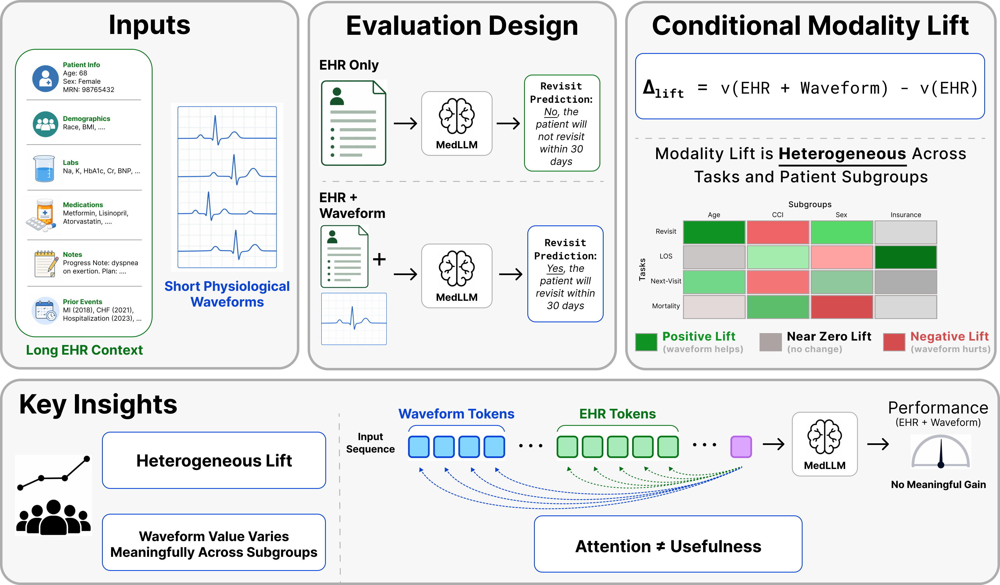
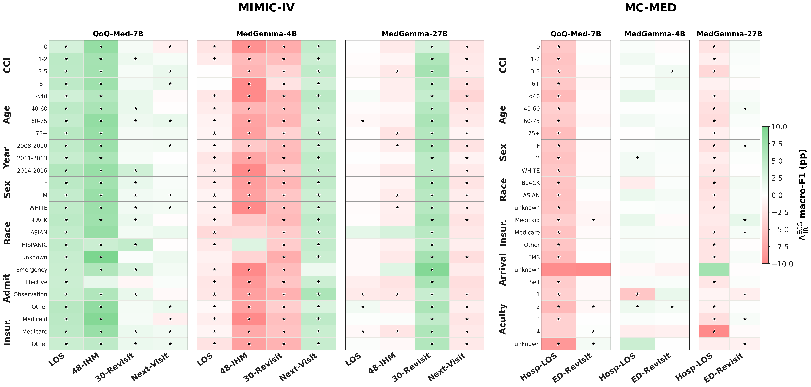
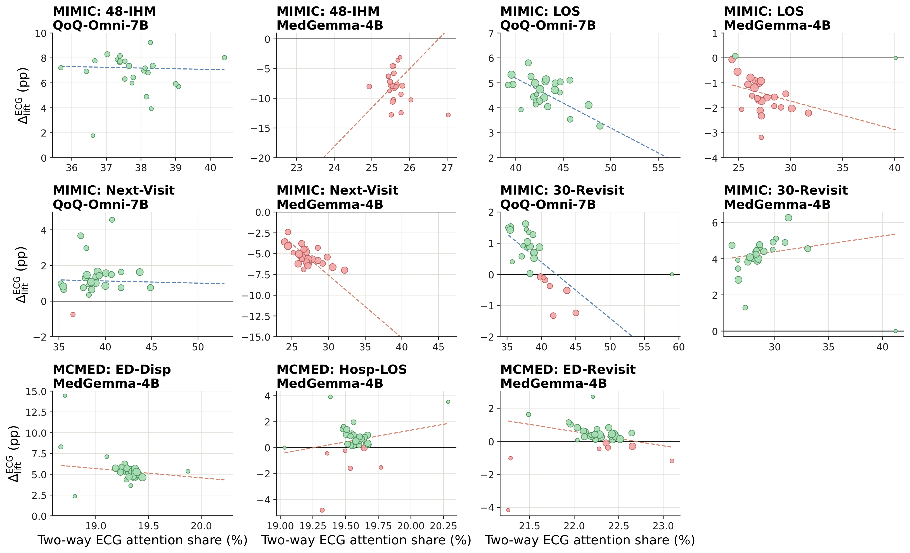

We introduce WavEHR, a systematic, zero-shot evaluation of open-source MedLLMs in this underexplored yet clinically relevant setting. We benchmark on two large-scale, publicly available, de-identified patient datasets containing complementary waveform modalities: MIMIC-IV with structured EHR and diagnostic 12-lead ECG (four tasks: 48-hour in-hospital mortality, length-of-stay, 30-day hospital readmission, next-visit emergency admission), and MC-MED with emergency-department EHR paired with bedside-monitor single-lead ECG and PPG (two tasks: hospital length-of-stay, ED revisit).
We evaluate three leading MedLLMs, QoQ-Med-7B (native time-series ingestion via ECG-JEPA encoder), MedGemma-4B and MedGemma-27B (rendered ECG/PPG as 4×2 grid-style waveform images). For each task we pass only textualized EHR to the model, then both EHR and waveform signals; the difference is our conditional modality lift:
Δlifts = v(EHR + s) − v(EHR)
We quantify uncertainty using 1,000-resample bootstrap 95% confidence intervals and report results across demographic, clinical, and temporal subgroups. We complement the aggregate metric with a content-normalized attention share Attns = As / (As + AEHR), measured at the final prefill query position and averaged over heads and attention layers, to probe whether the model is actually attending to the added waveform.
From our zero-shot evals, MedLLMs are sometimes able to leverage the physiological signal modality to boost performance over the EHR-only evaluation. However, we find that such Δlift is highly inconsistent, varying widely across models, tasks, and sub-groups, with heterogeneous performance being obtained across experiments. Despite physiological waveforms carrying complementary information that can be vital to clinical decision making, frontier MedLLMs are unable to consistently leverage these signals on medical tasks, offering opportunities for future multimodal research in this important field.

Although the subgroup performance gains vary, the subgroup directional trend generally follows the overall task-level waveform Δlift, with only a few exceptions. Clinical-context variables such as Charlson CCI, age, and admission type show more variation than sex or gender. This suggests that modality usefulness may be closely tied to illness burden, care setting, and the clinical decision being predicted, rather than to demographic grouping. For example, on MIMIC-IV LOS, QoQ-Med's ECG lift increases nearly monotonically with age (+3.54 pp for <40 → +5.26 pp for 75+); on MC-MED ED-Revisit, MedGemma-4B's ECG lift rises monotonically with comorbidity burden (−0.31 pp in lowest-CCI cohort → +1.15 pp in highest).

ECG attention share is non-trivial (not close to zero) across models and tasks, but always remains below 50%, models always assign larger attention scores to the EHR text modality, consistent with modality-dominance patterns in the LVLM literature. Crucially, there is no correlation between high ECG attention share and performance improvements. Cases where ECG flips an EHR-only prediction from wrong to right show only marginal attention differences from cases where ECG flips a correct prediction to wrong (ΔHe−Hu averaging −1.0 pp). The model may attend to the waveform while integrating it in a way that is not aligned with the task label or signal representation, identifying settings where engagement does not translate into reliable prediction gains.
WavEHR highlights a key gap and frontier for MedLLMs: better leveraging clinically relevant and widely available waveform data offers opportunities for stronger multimodal clinical learning. One avenue is to design better RL post-training objectives that incentivise effective usage of EHR-waveform modalities via novel rewards aligning physiological signal use with task-relevant attention over long EHR contexts. Broader integration of generic time-series encoders, together with better modality-aligned training, is still needed.
@inproceedings{thukral2026wavehr,
title = {How Well Do Clinical Foundation Models Leverage Structured Health Data and Waveforms?},
author = {Thukral, Megha and others},
booktitle= {Submitted to NeurIPS 2026 Datasets and Benchmarks Track},
year = {2026}
}